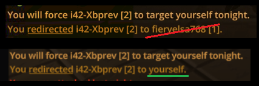

Mostly fixing patch bugs from: https://forum.imperium42.com/t/patch-v2-7-0-live/82791 & https://forum.imperium42.com/t/mini-patch-v2-7-0a/83031

Notable Class Fixes
- Handmaiden’s Analyze abil 2nd targeting slot now works again (thx @Jaffa5x).
- Maid’s Matchmaking abil will no longer always show as a match when targeting Mastermind with their In The Shadows abil active (thx @TheDirector).
- Secondary Cultists can no longer be an Inquisitor-marked Heretic (thx numerous reporters).
Minor Class Fixes
- Fixed Drunk hover ability text showing incorrect text.
- Added memo to Handmaiden’s Analyze abil for clarity:
Can't Target King. - Bountiful amounts of class card feedback/notification fixes.
- Some perspective feedback bugs were fixed, such as if you attacked
yourselfor redirected someone toyourself(instead of showing your own name in 3rd-person perspective).

General
- Start Early options availability bumped up to 12 mins offpeak, 15 mins peak.
- Server-buffered lobby chat has returned (lobby chat history on join).
- Fixed lobby’s top-left panels: Now better-aligned and immobile (thx @tons of reporters).
- “Any Starting King” stat is now interactable.
- Set max stats win rate to 100% and lowest to 0%.
- Made lowest and highest stats (0%/100%) omit decimal points.
–Xblade